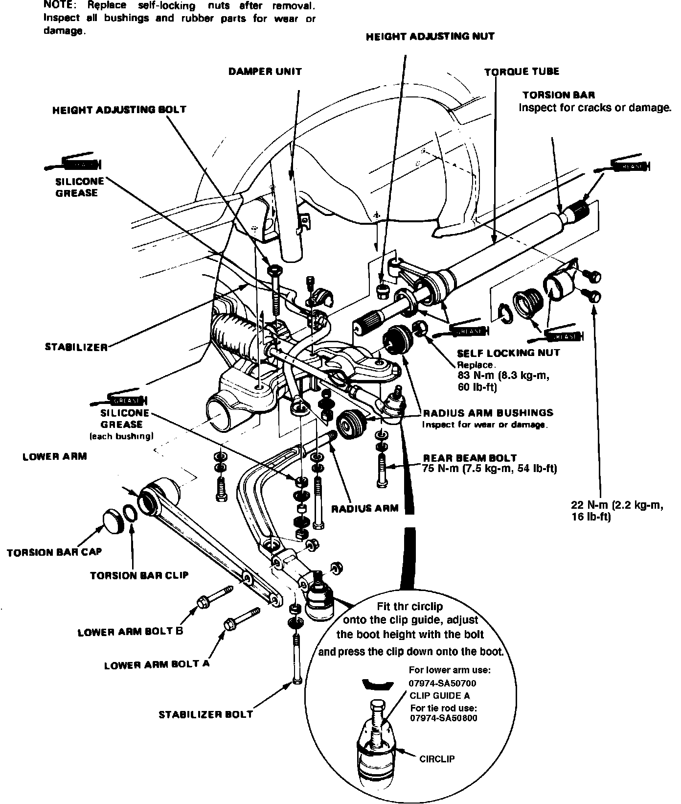

Front
Fig. 8 Exploded view of front suspension components. Integra:

1. Raise and support front of vehicle and remove front wheels.
2. Support weight of engine with a chain hoist or other suitable lifting equipment.
3. Remove steering gear as described under ``Steering Gear, Replace.''
4. Support lower control arm using a suitable jack.
5. Remove lower ball joint cotter pin and nut, then pry ball joint out of steering knuckle.
6. Remove torque tube holder, then disconnect exhaust pipes as necessary.
7. On models equipped with manual transaxle, disconnect shift rod and extension from transaxle.
8. On models equipped with automatic transaxle, remove shift cable guide from floor and pull shift cable down by hand.
9. On all models, remove engine mount bracket nuts.
10. Support center of rear beam with a suitable jack, then remove beam attaching bolts and pry beam loose.
11. Remove stabilizer bracket and bolt, then the stabilizer, Fig. 8.
12. Remove rear mounting bracket.
13. Reverse procedure to install.